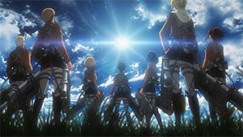
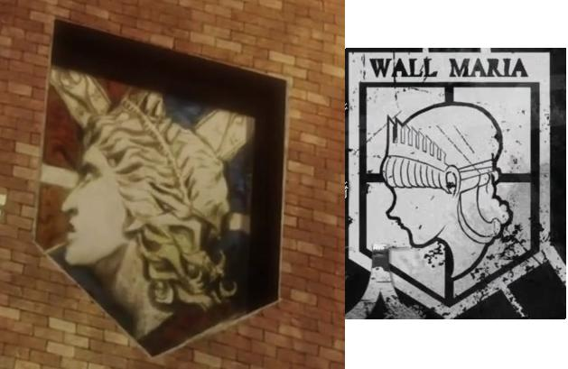
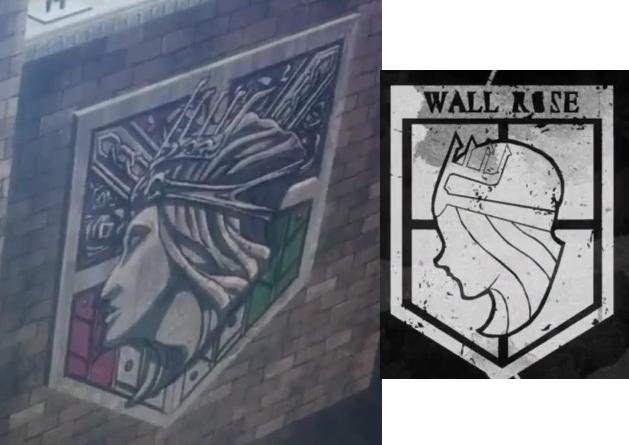
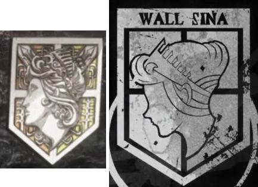
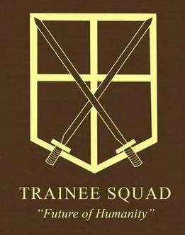
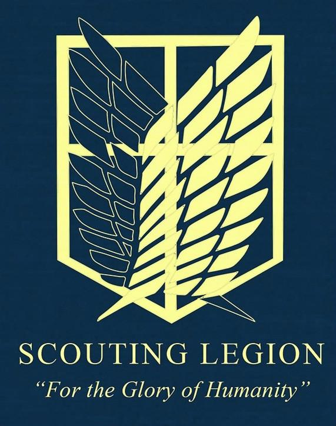
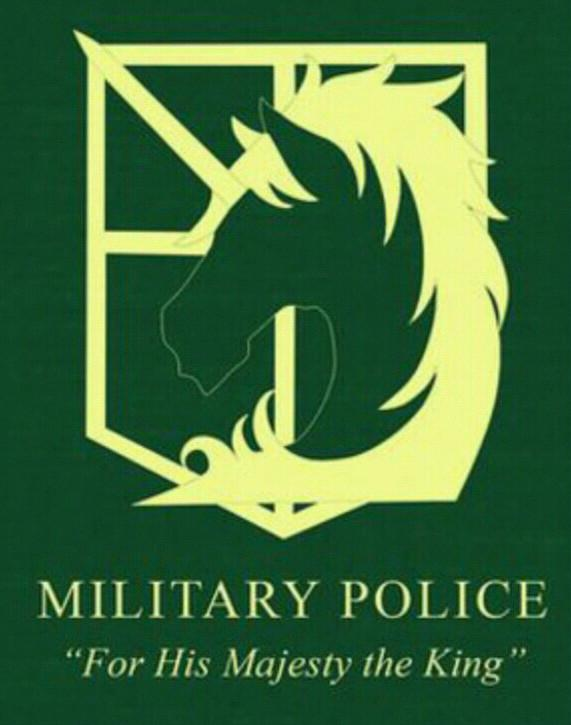
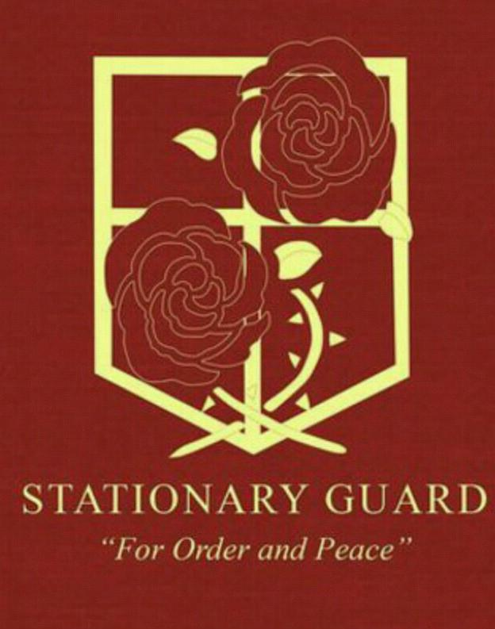

剧情简介
人类曾一度惨遭巨人捕食而崩溃，濒临灭绝。幸存下来的人们建造了三面巨大的防护墙来阻止了巨人的入侵，在这隔绝的环境里享受了一百年的和平。不过作为“和平”的代价，人类失去了到墙壁的外面的“自由”，如同圈养的畜牲一般，安稳地生活着。就在这悠长的安逸持续了一百年，也就是 艾伦·耶格尔十岁那年之际，突然，一个前所未见、身高60米的“超大型巨人”出现在人类面前，他以压倒性的力量破坏了巨墙，其后瞬间消失，巨人们成群地冲进墙内，人类惨成饵食。母亲死亡、父亲失踪。其父可能掌握了巨人之谜， 艾伦·耶格尔因父亲而获得了的“巨人之力”，在军队同期训练生里有着其他人无法比拟的强悍精神力，进而加入向往以久的调查军团，艾伦的生活，就在这一刻，开始发生了翻天覆地的变化……
设定解说
| 艾尔迪亚帝国 |
主角等人所在的墙中世界的前身，现今墙内世界的人民皆为【艾尔迪亚人】，全部都是巨人始祖【尤弥尔·弗里茨】的子孙，所有的巨人皆是艾尔迪亚人所变。 。 |
| 马莱帝国 |
位于大陆的墙外世界的人类国家，无法变为巨人，但掌握较为先进的科技。可以制造巨人针剂等物品，莱纳等人就来自该地。 |
| 玛利亚之墙 |
最外层的墙壁。845年被铠之巨人打破，然后被成群巨人攻陷，之后人类一直想要夺回这道城墙。作品中只提及其中一座瓮城，即位於南部的希干希纳区。 |
 |
| 罗塞之墙 |
目前人类退守的最外部墙壁。自玛利亚之墙沦陷后，成人类为对抗巨人的最前线。作品中提及其中四座瓮城，分别是位於南部的托洛斯特区，东部的卡拉尼斯区，西部的凯洛鲁巴区，北部的斯托海斯区。 |
 |
| 希娜之墙 |
人类活动区域的内地。中央政府及宪兵团位于此道墙内。作品中仅提及其中三座瓮城，分别是位於东部的史托黑斯区、南部的艾路米哈区、西部的亚鲁凯鲁区。 |
 |
| 训练兵团（讨伐之剑） |
由尚未加入正式兵团的新兵和负责训练新兵的教官组成。 |
 |
| 调查兵团（自由之翼） |
抱着必死的决心挑战墙外巨人领域。因为死亡率最高，所以是一般新兵绝不愿意加入的兵团。人类阵营中的革命派。士兵精锐度远非其他兵团可比，因为长期在前线与巨人战斗，所以几乎人人都具有非凡的战斗能力。 |
 |
| 宪兵团（执法独角） |
在国王身边管理人民，人类阵营中的保守派。维持秩序。只有在训练兵团的期末考试综合成绩前十名的新兵才有加入宪兵团的资格。 |
 |
| 驻屯兵团（镇守蔷薇） |
负责强化城墙，防守各个城市，人类阵营中的中立派。考不上宪兵团，又不想加入调查兵团的新兵的最终去处。 |
 |